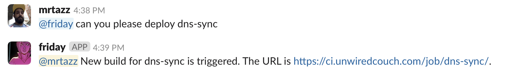
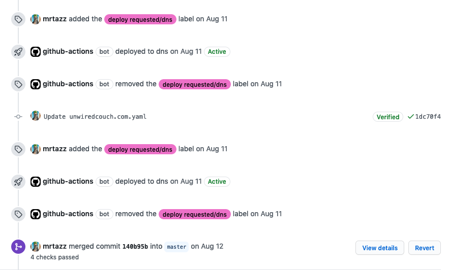

Branch Deploys with GitHub Actions
Over the last 18 months or so working for GitHub on the team managing deploys, I’ve gotten very accustomed to branch based deployments. Even more so I’m very much enjoying it over the usual trunk based deployment setups that are common in CI/CD environments (this however might be a topic for a different post).
With the official availability of GitHub Actions last year I decided to move some of my CI jobs for my personal infrastructure over from my private Jenkins server to Actions. Both in an effort to clean up the setup a bit, but also to not have to maintain and rely on running Jenkins myself so much anymore.
My personal infrastructure runs out of a single monolithic repository that contains chef cookbooks, provisioning code, kubernetes resources, terraform code, and also dns configuration (which will serve as the example in this post) in a subdirectory. That is why a lot of the examples I post here are related to having multiple deployment targets in a single repository.
The used to be situation
For a couple of years now I’ve been managing my DNS configuration with [octodns]. It’s a really nice tool written by the GitHub engineering team to manage DNS zones across different providers via yaml files. My zones are configured in yaml files in the dns sub directory of my infrastructure repository. There’s a small Makefile that has tasks for verifying and deploying configuration. And it usually got deployed via a push to the default branch of the repo and a top level Jenkinsfile that mapped directory paths to Jenkins jobs like this:
stage('determine subjob to build') {
try {
sh "printenv"
echo "Got params: ${params}"
foundJob = false
changedFiles = sh(script: "git diff --name-only ${params.prevSHA} HEAD", returnStdout: true).trim()
if (changedFiles =~ /^jobs/){
build job: 'create-jobs', wait: false
foundJob = true
}
if (changedFiles =~ /^dns/){
build job: 'dns', wait: false
foundJob = true
}
if (!foundJob) {
echo "No subjobs to build for " + changedFiles
}
sh "/usr/local/bin/ci-notify --job=${env.JOB_NAME} --build=${env.BUILD_NUMBER} --success"
}
catch (err) {
sh "/usr/local/bin/ci-notify --job=${env.JOB_NAME} --build=${env.BUILD_NUMBER} --failure"
throw err
}
}
In case the job that was run on push failed or I just wanted to rerun the deployment, I also have a helpful Slack bot to help out with that:

And this worked really well for a couple of years. I don’t have a ton of changes usually in my personal DNS setup, so whenever a change was needed, this setup was more than enough automation to keep me happy. But at some point I got annoyed by the fact that basically all automation for my infrastructure was dependent on Jenkins being up (and I had to make sure it was).
Hello Actions
Fortunately around that same time I got really annoyed running Jenkins, GitHub Actions went GA with the CI offering which prompted me to look more into how I could use it to maybe replace my Jenkins setup.
As a first step here I wanted to change as few things as possible. So Actions would literally just replace Jenkins, running the deployment logic whenever I pushed to the default branch of my infrastructure repository.
In Actions this was done by restricting the job to changes in the dns subdirectory or changes to the workflow file:
on:
push:
paths:
- 'dns/**'
- '.github/workflows/dns.yml'
The job itself would then run the same sequence of make check to do a dry run of the changes, and then make update to deploy the changes.
Pull Request CI integration
This was already great and a perfect replacement of the setup I had before. But it wasn’t using the power of Actions to their full extent. The most obvious one being that this wouldn’t really work with pull requests. Sure the job would run, but every change pushed to a PR would automatically be deployed. Which also can be a nice workflow, but wasn’t what I wanted. I wanted to have more control over deploys, essentially a human 👍🏻 that the changes are actually good to go. And as the signal for this I decided on the merge button. So once I was happy with the changes and wanted to see it deployed, I just had to merge the PR and make sure the automation keeps deploying on the default branch.
In order to do that, all I had to do was add if: github.ref == 'refs/heads/master' to the step that was running the make update deployment. And voila, the make check dry run is run on any PR now with nice and proper GitHub checks integration and any merge to master triggers a deploy now and makes sure the changes go out.
Branch based deploys
I ran with this setup for a while. And again it worked perfectly fine. However I was also running into situations where the actual deploy failed even though the PR check was fine. Because there is no place like production. And all the tests will never be a full replacement to catch all the things before hitting production. That’s just how it is. But it meant that I would only find out after the merge that something was off. And then I had to open another PR to fix the problems which usually was just a small one line change. And I got annoyed by this. Plus Pull Requests have a really nice integration with the deployments API which I was missing out on.
So I wanted to have all these nice things as well. The first step to get there was to find another trigger for deployments that signals the automation that this code is fine to deploy. Pull Requests don’t have a ton of ways to interact with them. It basically comes down to comments or labels. And because there is a way to trigger Actions on labels, that’s what I went with.
In Actions configuration this looks like this. First I had to make sure the job runs when the PR gets labeled (the other 2 opened and synchronized make sure the automation is run on any changes pushed to the PR):
on:
pull_request:
paths:
- 'dns/**'
- '.github/workflows/dns.yml'
types: [opened, synchronize, labeled]
Then I decided on a label name - in this case deploy requested/dns - and made sure the deployment logic only ran when the PR actually was labeled with that. I did this by making deploy a separate job in the Actions definition and have it be guarded by if: contains(github.event.pull_request.labels.*.name, 'deploy requested/dns') similar to how the guard on default branch worked before.
Now to have that nice PR timeline integration with the deployments API I wrote a small ruby script which is configured via environment variables in the job.
env:
DEPLOYMENT_REPO: ${{ github.repository }}
DEPLOYMENT_ENVIRONMENT: dns
DEPLOYMENT_DESCRIPTION: dns updated via octodns
DEPLOYMENT_TOKEN: ${{ secrets.GITHUB_TOKEN }}
DEPLOYMENT_SHA: ${{ github.event.pull_request.head.ref }}
In order to record deployments and their status changes and run the deployment creation step right before the deployment logic like so:
- name: start deployment
run: ruby bin/gh-deployment.rb create
And then the at the end of the job there are these two steps that are run on success and failure of the job respectively:
- name: record deployment failure
run: ruby bin/gh-deployment.rb failure
if: failure()
- name: record deployment success
run: ruby bin/gh-deployment.rb success
if: success()
Which makes sure the deployment status is properly reflected in the Pull Request timeline:

Wrapping up
This is now a workflow I really enjoy. It’s extremely similar to how we work at GitHub, which is nice because I don’t have to rethink how things are done when I change things in my personal infrastructure. Plus I get all of the testing and feedback on my PR and can act there with changes before merging the code. I also can work on more than one PR at a time, and even have a PR for my chef changes and one for my dns changes and have them be deployed and tested and incorporate feedback before merging. Or do it in the same PR because the pre deployment checks will run as soon as there are changes in the respective subdirectory. And I can add a deploy requested/dns and a deploy requested/chef label to have the automation for both deployments run.